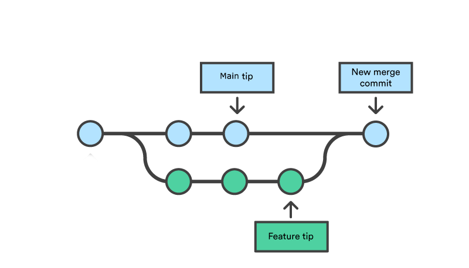

1.2 Uso Básico
En esta sección veremos el uso basico de Git usando la aplicación GitHub Desktop. Se asumirá que ya tienes un repositorio clonado de manera local en tu computador (Ver sección anterior )
Se verán los conceptos de
- commit
- branch
- push
1.2.1 Commits
Los commits son la parte esencial git. Estos corresponden a registros de cambios que se hacen en una carpeta (repositorio). Generalmente los cambios que un repositorio puede tener son: Que se cree un archivo nuevo, que se elimine un archivo ya existente, o que un archivo ya existente sea modificado.
Ver y reconocer cambios en el repositorio
Cuando hacemos cambios en un repositorio, GitHub Desktop lo mostrara de esta manera.
El signo [+] significa que el archivo es nuevo, mientras que el signo [•] significa que el archivo ya existía, pero que ha sido modificado. Por último, [–] indica que un archivo ha sido borrado.
Crear registro (commit)
Para crear un commit, seleccionamos en la barra lateral de la izquierda, que cambios queremos registrar. Luego nos vamos a la parte inferior donde tendremos que ponerle un nombre al commit, y opcionalmente una descripción.

Para finalizar hacemos click en el botón azul Commit to main
En el botón azul, el nombre de la rama ( en este caso main), puede cambiar según la rama en que estemos.
Ver historial de cambios
Si nos vamos a la pestaña history veremos un registro de todos los commits realizados. En esta lista, el primer commit (de arriba hacia abajo) es el commit más reciente, y los que siguen hacia abajo son cada vez más antiguos.

Si hacemos click en alguno de los registros podremos observar los cambios registrados en ese commit. Para cada archivo (modificado), en caso de ser un archivo de texto, veremos en verde las lineas nuevas y en rojo las eliminadas. Por otro lado, por ejemplo, si es una imagen la que ha sido modificada, podremos visualizar como esta era antes y despues.
1.2.2 Branches (Ramas)
Las branches (ramas) son un una funcionalidad muy util de git. Estas nos permiten, entre otras cosas, explorar e intentar cosas nuevas en un proyecto, sin el temor de echar a perder todo lo que ya esta bueno (y funcionando).
Para imaginarnos esto mostraremos unos ejemplos en las siguientes imagenes.
Por defecto, siempre se tiene una rama principal, que se suele llamar main (o master) y se crea automáticamente cuando se crean los repositorios. De alguna forma, todo lo ya hemos visto ha sido en la rama main.
Acá tenemos una representación del historial de commits, algo que ya vimos en la aplicación Github Desktop. En esta, cada círculo es un commit y tiene un orden cronológico de izquierda a derecha. Es decir el primer commit que se hizo fue el a, luego se hizo el b, y por último el c.
Lo importante es que todos los círculos (commits) tienen el mismo color, indicando que pertenecen a la misma rama. En particular, en este caso estamos representando la rama principal (main)
Entonces, ahora, una branch (rama) (a partir de la rama principal), en términos simples, es una “copia” de nuestro espacio de trabajo, manteniendo los commits antiguos de la rama principal, pero permitiendo que los nuevos commits queden aislados.

En esta figura, el orden cronológico de los commits también es de izquierda a derecha. Sin embargo, podemos observar que hay ramas presentes. Estas tienen un color distinto al de la rama principal (celeste), e indican, por ejemplo, la implementación de pequeñas o grandes características.
Una cosa importante a considerar, es que se hace con las ramas luego de que lo que se ha implementado en estas (solución de algún error, nueva función o característica) está listo. Las ramas, pueden fusionarse en un proceso que se llama merge, que veremos más adelante. Generalmente la rama principal es la que se fusiona obteniendo los cambios de las ramas paralelas, para mantener el desarrollo estable en la rama principal.

Sin embargo, en esta figura vemos que si luego de la creación de la rama Feature, se han reaalizado un par de commits en ambas rama (main y Feature), por lo que en este caso el proceso de merge tratará de fusionar las modificaciónes de ambas ramas. En caso de haber conflictos uno tendrá que resolverlos de forma manual. (No es tan dificil como suena)
Crear una rama
- En la aplicación
Github Desktopseleccionamos donde diceCurrent Branch
- Hacemos click en el botón
New branch.
- Escribimos el nombre que le queremos poner a la rama, y confirmamos haciendo click en el botón azul
Create branch
- Con esto ya tendremos nuestra nueva rama creada, y estaremos en ella.
Usando la rama
Para usar una rama, solo tenemos que fijarnos que donde dice Current branch salga el nombre deseado.

Sino es el caso, debemos cambiar de rama, y luego solo queda hacer cambios y commits, tal como vimos antes
Cambiar de rama
En la aplicación
Github Desktopseleccionamos donde diceCurrent BranchAparecerá una lisa con todas las ramas creadas. Seleccionamos la que queremos usar

Ejemplo
En esta subsección veremos de forma sencilla una utilidad práctica de usar ramas
Siguiendo la línea de lo mostrado anteriormente, haremos modificaciones y commits en la rama new_branch. Luego la compararemos con la rama
principal.

Hemos creado 2 commit nuevos. En uno creamos un archivo nuevo, y en el otro modificamos ese archivo.
Pero si nos cambiamos a la rama principal (‘main’), veremos que esos commits no existen.

De forma más visual aún, si seleccionamos la rama new_branch en GitHub Desktop, y nos vamos a un explorador veremos los archivos del repositorio, incluyendo el archivo nuevo (nuevas_caracteristicas.txt).

Pero si seleccionamos la rama main (en GitHub Desktop), ahora en el visor de archivos el nuevo archivo ya no aparece.

Esto último ocurre no solo con la creación de archivos, sino que todos los archivos vuelven a como estaban en la rama principal.
1.2.3 Pull y Push
De alguna manera, todos los ejemplos mostrados hasta ahora (en esta sección) han sido de forma local. Sin embargo, en algún momento necesitaremos sincronizar los repositorios locales con los remotos (GitHub). Esto es de alta utilidad, pues nos permitirá: - Tener un respaldo de nuestros códigos (y otros archivos) en la “nube”, - Trabajar en distintos computadores con un flujo ordenado. - Desarrollar código entre varias personas de forma eficiente y ordenada.
Es aquí donde los conceptos de pull y push entran en acción.
pull nos permitirá actualizar nuestro repositorio local en caso de haber cambios (commits) en el repositorio remoto.
push hace la operación inversa. Lleva nuestros cambios (commits) locales al repositorio remoto.
Push en GitHub Desktop
Cada vez que hacemos un commit, estos en el historial aparecerán con una flecha hacia arriba, indicando que ese commit es local y dando la opción de subirlo al repositorio remoto. Para hacerlo hacemos click en Push origin

Pull en GitHub Desktop
En la aplicación, antes de hacer pull nos pedirá antes hacer un fetch. En términos simples y simplificados, la acción fetch verificará si en el repositorio remoto hay o no cambios. En caso de haber cambios, nos mostrará entonces la opción de hacer pull.

Para hacerlo hacemos click en Fetch origin y luego en Pull origin